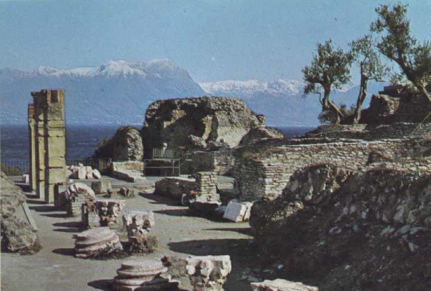

LE GROTTE DI CATULLO
Caio Valerio Catullo, morto nel 54 a.c., apparteneva alla ricca famiglia veronese dei Valeri e possedeva sicuramente una dimora a Sirmione, ma nulla prova che si trovasse proprio in questa zona.

I resti della villa romana, denominata "Grotte di Catullo"
La grande villa, al di sotto della quale sono state rinvenute strutture del I. sec. a.C., risale agli inizi del I. sec. d.C. e si ritiene possa essere appartenuta ad un esponente della famiglia dei Valeri, divenuto console nel 31 d.C. Non si conosce l'esatto periodo ed il motivo del declino della villa; il ritrovamento di tombe, sia all'interno che all'esterno dell'edificio, risalenti al IV - V sec. d.C. indica però che in quel periodo era sicuramente già stata abbandonata.
Questo imponente sito archeologico, oltre a rappresentare la testimonianza più importante tra i ritrovamenti del periodo romano in territorio sirmionese, è considerato l'esempio più grandioso di villa romana rinvenuto nel nord Italia.